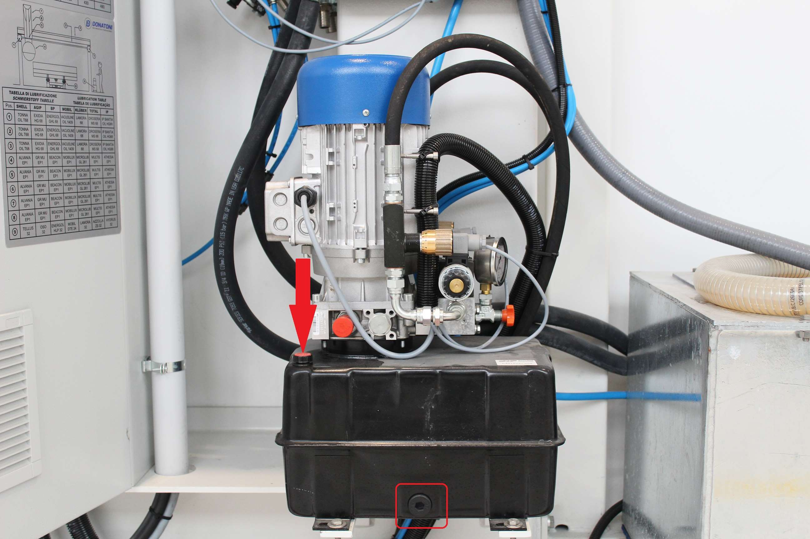
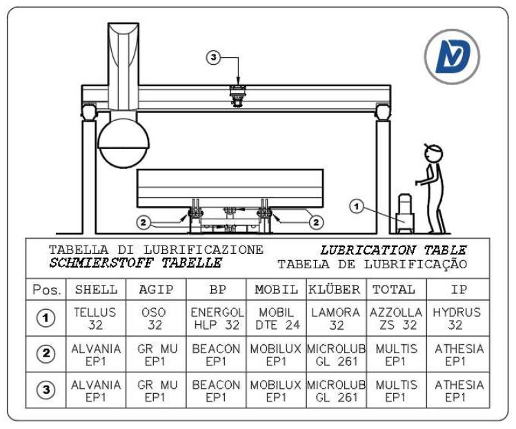

Error explanation
Anomaly on the bench lifting system; The circuit breaker relating to the bench has tripped, it offers protection on the system against both short circuits and overloads. To reset the switch, move the selector to 0 and then to 1;


Possible causes
The causes can be divided into mechanical or electrical problems
Mechanical problems:
Oil pump motor blocked. You can try to start the table pump and check whether it actually rotates. If it is completely blocked, replace the oil pump;
There is not enough oil inside the tank;
The oil level inside the tank is low and the oil is very dirty, or the filter is dirty;
Tilting table blocked
Electrical problems:
Short circuit between motor phases;
Missing phase;
Short circuit in the motor windings;
Faulty switch
Possible solutions
In the photos below there is the pump with the relevant points of interest marked;


MECHANICAL
First, check that the motor cooling fan rotates freely. For example, try moving the fan with a screwdriver. If it is blocked, the pump must be replaced.
Check the oil level with a clean dipstick, and check whether there are deposits on the bottom:
if the level is low, top up with 32 viscosity oil and periodically monitor the system to check whether it empties again, as there may be leaks;
if there is a lot of dirt, empty the tank — there is a plug in the tank — and clean it with diesel fuel, then refill it;
Check that the piston joints and table joints are not blocked, then grease the relevant points.

ELECTRICAL → assistance from an electrician or a Donatoni technician on site is recommended
Check that there is no continuity between the various phases; disconnect the cable from the pump electrical box, insulate the terminals, reset the switch, and activate the oil pump. If it trips, the problem may be the cable;
Measure the input voltage with a multimeter and check that all phases are present. If, for example, one phase is missing, check that all terminals are properly tightened;
If the switch does not trip when carrying out the test in point 1, connect the cable to the pump. If the switch trips when starting the pump, the problem is the pump, so it must be replaced;
Related articles